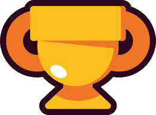

Eventos

Aquí podrás obtener información sobre todos los modos de juego. En Brawl Stars puedes participar en eventos de 3c3 con jugadores aleatorios, o bien puedes invitar a tus amigos para que se unan a tu equipo. Originalmente existieron 5 modos de juego rotativos (supervivencia, atrapagemas, atraco, balón brawl, caza estelar), pero a medida que avanzaron las actualizaciones se han introducido nuevos modos de juego temporales que luego fueron implementados de forma permanente (zona restringida, noqueo). Para brindarle un caracter más competitivo, se implementaron la Liga Estelar y la Liga de Clubs, en las cuales los jugadores pueden competir en partidas y ascender a través de un sistema de rangos, ganar recompensas en puntos estelares, monedas de club, entre otras. Jugar a estos modos otorga trofeos. El rango de tus brawlers depende del número de trofeos que tengan. Según el resultado de la partida, el brawler con el que disputes la batalla ganará o perderá trofeos. Tu número total de trofeos es la suma de los trofeos de cada uno de tus brawlers.

Eventos 3c3
Atrapagemas
Artículo principal: Atrapagemas
El objetivo principal de este modo de juego es conseguir 10 gemas. Una vez conseguidas comenzará un contador de 15 segundos y si se acaba, ganas. Si tienes una gema y mueres, la perderás; si tienes las diez gemas y te matan se reiniciará el contador. Si hay un empate de gemas entre los dos equipos, y los dos equipos tienen más de 10 gemas, el contador se parará hasta que un equipo agarre una gema extra.
Atraco
En este modo de juego ambos equipos tendrán una caja fuerte y dependiendo de la fuerza, tendrán más o menos vida (máximo 45.000 puntos de vida). El objetivo principal será defender tu caja e intentar destruir a toda costa la caja del equipo rival. La partida tiene una duración máxima de 2 minutos y 30 segundos. Si no se logra destruir la caja, ganará el que tenga más % de vida. El contador de % de vida de la caja se muestra en los laterales. Antiguamente, el modo era de un equipo que atacaba y otro defendía la caja.
Caza Estelar
El objetivo es conseguir más estrellas en 2 minutos. Se consiguen derrotando a otros Brawlers y todos inician con dos estrellas, pero cada vez que mates a alguien, se te suma una más hasta máximo 7. Todas las estrellas que el jugador y sus compañeros reúnan serán añadidas al contador de estrellas de su equipo. Al inicio de cada partida, en el centro habrá una estrella azul que podrás agarrar y te podrán quitar los enemigos al matarte, y si empatas en estrellas, la estrella azul decidirá el ganador.
Balón Brawl
Es un modo de juego con temática de fútbol, cuyo objetivo es anotar un gol dentro de la portería del equipo enemigo. El primero que anote dos goles al equipo enemigo ganará. Si se acaba el tiempo y hay un empate, se entrará en 'Tiempo Extra' durante un minuto y todos los obstáculos serán destruidos. Si pasan los 2 minutos y medio, y un equipo va con una ventaja de 1 a 0, ganará el equipo y si se pasa el 'Tiempo Extra', hay un empate.
Noqueo
Modo de juego que consiste en eliminar al resto del equipo enemigo y ganar un total de 2 rondas. Si alguien de tu equipo o del equipo enemigo muere, este no puede reaparecer hasta la siguiente ronda. Después de un tiempo, van apareciendo nubes venenosas desde los laterales al centro.
Zona restringida
Es un modo de juego en el que debes mantenerte en distintas zonas para ganar. Cuando entras en una zona, inicia un marcador de %. Gana el equipo que tenga todo completo o más % después de 3 minutos. Puede haber hasta 3 zonas. Si hay una zona, el primer equipo en llegar al 100% gana. Si hay dos, en cuanto un equipo haya hecho un 50% en una zona, esa zona dejará de contar como porcentaje para el equipo, y debe irse otra zona. Pasa lo mismo cuando hay 3 zonas pero las 2 primeras dan 33% y la última 34%.
Eventos 1c1
Supervivencia (solo)
Modo de juego de 10 jugadores. Los Brawlers aparecerán al azar por el mapa y se deben eliminar para ganar. El último jugador que quede vivo gana. El mapa se llenara de nubes tóxicas que quitan 1000 de vida y al quinto golpe, sube a 1300, 1600, 1900, etc... Los cubos de fuerza, hacen que el daño y la vida del Brawler aumenten (5% el daño y 400 puntos de vida), y para conseguirlos debes eliminar enemigos (dando la mitad hasta 5) o romper cajas de 6000 puntos de salud (o menos por la fuerza medio de la partida). Hay modificadores que son: bebidas energéticas (200% de daño y velocidad aumentada 10 segundos), setas curativas, curando 1000 de salud, meteoritos que caen (3 segundos para salir del área) haciendo 2000 de daño y un robot con 32000 de puntos salud y 600 puntos de daño (o menos por la fuerza media de la partida), que sigue al jugador más cerca y te da 3 cubos de fuerza. Solo puede haber uno por mapa.
Duelos
Es un modo de juego agregado el 16 de diciembre de 2021 sustituyendo a Supervivencia+. Es un modo 1c1 y se deben elegir 3 brawlers para poder jugar distintas rondas. Tiene las mecánicas similares a las de Noqueo. Para jugar, se deben elegir 3 brawlers diferentes y se harán 3 rondas diferentes. Si eliminas a un brawler rival, seguirás teniendo tu brawler elegido, pero si te eliminan, cambiarás de brawler. Si gastas gadgets, contarán para los siguientes brawlers y también se guardará tu súper.
Eventos 2c2
Supervivencia (dúo)
Artículo principal: Supervivencia (dúo)
Eventos especiales
Pelea robótica (JcE)
En este evento, tres jugadores tendrán que defender una caja fuerte ubicada en el centro del mapa. Irán apareciendo diversos robots que, por oleadas, intentarán destruir la caja fuerte. Las dificultades están desde Normal hasta Demencial XVI. A partir de Demencial, los robots aparecerán con bastante frecuencia y su daño aumentará.
Todos contra uno (JcE)
En este evento, tres jugadores se enfrentarán contra un Mega Robot ubicado en el centro del mapa. Este robot a medida que pase el tiempo se irá haciendo más fuerte. A diferencia de los robots que se aprecian en modos como Supervivencia o en Asedio, este robot tiene distintas etapas y clases de ataque, además de que presentará pequeñas oleadas de robots secundarios que dificultarán causar daño al mega robot. Al culminar una partida, el jugador podrá acceder al siguiente nivel de dificultad. En este evento las fichas no se pueden multiplicar.
Megabrawler (1c5)
En este evento, cinco Brawlers juntos se enfrentarán en el campo de batalla contra un súper Brawler que tendrá una vida y daños potenciados. Si el equipo logra derrotar al Mega Brawler antes de que el contador acabe (2:30 el tiempo) ganarán la partida, pero si el contador se acaba y no se ha derrotado al Mega Brawler, este mismo ganará.
Irrupción urbana (JcE)
Modo de 3c1, debes evitar que el Dinosaurio Robot destruya la Superciudad, cada vez que el monstruo sea vencido se aumentaba la dificultad, por lo que tenía más vida y más velocidad de movimiento y ataque.
Competitivo
Liga Estelar
Es un modo de juego implementado en la actualización de marzo de 2021. Cualquier jugador con más de 4500 trofeos podrá jugarlo. Al principio, se te adjudica un rango, dependiendo de tu máximo de puntos en Lucha Estelar. Por ejemplo, si tuviste de 0 a 149, se te pondrá en el rango Bronce I. Si fue entre 400 y 599 puntos, estarías en el rango Plata I. Así hasta Oro III. La temporada dura 10 semanas (8 semanas a partir de la temporada 10), que estarán conectadas a la temporada de Brawl Pass, pero su primera duró menos debido a que el Brawl Pass ya llevaba más de un mes.
Liga de Clubs
Es un modo de los Clubes que se implementó la primera temporada el 24 de noviembre de 2021 y se deben ganar trofeos del club para hacer que que tu club pueda subir de Liga. Cada temporada dura 1 semana y solo se juega los Miércoles, Viernes y Domingos. Para jugar, es necesario usar tickets del club y puedes jugar una partida de 2 tickets o uno normal por 1 ticket. Los modos de juego lo mismo que Liga Estelar. Los trofeos del club se pueden ganar o perdiendo y te darán trofeos extra si juegas con personas de tu club. Cuando la temporada finalice, si jugaste y gastaste todos tus tickets, se te otorgarán monedas del club, dependiendo de cuantas partidas jugaste.
Campeonato Mundial
El Campeonato Mundial es la competencia oficial de Esports para Brawl Stars, organizada por Supercell. El Campeonato de Brawl Stars se divide en cuatro fases, cada una con sus propias reglas y sistemas preexistentes que deben ser obligados para poder ingresar a las siguientes etapas. Los desafíos en el juego de 72 horas se llevan a cabo durante 8 meses a partir de febrero y los clasificatorios en línea se llevan a cabo la semana siguiente. Los modos jugados durante el Campeonato consisten en cinco de los seis modos: Caza estelar, Balón Brawl, Atrapagemas, Atraco, Asedio y Zona restringida con modos y mapas preseleccionados elegidos para las partidas.
Otros eventos
Robo de regalos
Modo 3vs3 similar a Balón Brawl que consistía en ir a la base enemiga y robar un regalo, llevarlo a tu base y defender el regalo de tu base. Ganaba el equipo que robara 2 regalos o el que tuviera más regalos antes de los 3 minutos. (Solo está disponible durante Navidad)
Robo de trofeos
Modo 3vs3 similar a Robo de Regalos pero con la temática del robo del trofeo de la Brawl Stars ChampionShip. Consistía en ir a la base enemiga y robar el trofeo, había que llevarlo a la base aliada para conseguir un punto y a su vez, había que defender el trofeo de nuestro equipo. Ganaba el equipo que robara 2 trofeos o el que tuviera más trofeos antes de los 3 minutos.
Agarra el trofeo
Era un modo 3c3 en el que un trofeo que estaba en medio del mapa y los equipos tenían que agarrarlo por más tiempo para completar una barra al 100% o el que tuviese más porcentaje en su barra, ganaría la partida. El brawler que llevara el trofeo, estaría ralentizado y se podían pasar a través de los muros.
Tumbas malditas
Es un modo de juego igual a Supervivencia pero vas perdiendo 1% de vida cada segundo y para recuperarse vida, tenía que hacerle daño a sus enemigos para recuperar cierta cantidad de vida según el daño del brawler usado o romper cajas de puntos de fuerza. Si eliminas a otro, recuperas toda la vida. Ganaba el jugador que quedara con vida hasta el final (sólo está disponible durante Halloween). Actualmente, en partidas amistosas y en mapas creados se puede jugar con un modificador llamado igual que este evento temporal y que tiene la misma función.
Peek-A-Boo
Modo de juego en el cual los jugadores se hacen invisibles cada 7 segundos y durante siete segundos alternando siendo invisibles y visibles.
Supervivencia+
Fue un modo de juego similar al antiguo Supervivencia pero con el cambio de que cada vez que eliminabas a un rival, recibirás 2 trofeos extras (máximo 18 trofeos por partida). Si conseguías quedar en primer puesto, ganarías los trofeos extras dependiendo de la cantidad de rivales eliminados, pero si quedabas del puesto 2 hasta el 10, te restaban 2 trofeos. El modo de juego se sacó para evitar que la gente deje de hacer team y campear en los arbustos, pero no funcionó porque se seguía haciendo en las partidas.
Voleybrawl
Es un modo similar a Balón Brawl 3c3 pero con la temática del voleibol. Había una pelota de vóley en el centro del mapa y con acercarte, se mandaba a la cancha rival. A medida que los brawlers se hacían pases, la pelota iría más rápido y se podía desviar a otra dirección. El primer equipo que consiguiera 2 puntos o 1 punto y el tiempo se acababa, ganaba.
Brawloncesto
Modo similar a Balón Brawl 3vs3 con la temática del baloncesto. Los mapas son de un tamaño pequeño, y hay un rango alrededor de las canastas (que estas están en movimiento). Si consigues anotar fuera del área, son 3 puntos pero si anotas dentro del área, serán 2 puntos. El primer equipo que conseguía 5 puntos (anteriormente 10 puntos) ganaba.
Cargamento
Es un modo de juego que se agregó unos días antes de que empezara la temporada 11. Es 3c3 y consiste en mantenerse en una zona de un cargamento que se mueve lentamente hasta llegar al destino para acabar la partida. El carrito puede destruir objetos del mapa, impedir ataques o súperes de brawlers y te puede empujar sin quitarte vida. Si ninguno de los dos equipos llega a 100%, empezará el tiempo extra donde se mueve más rápido el cargamento y siempre habrá que llegar hasta 100%.
Destrucción
Es un modo de juego que se agregó unos días antes de que empezara la temporada 11. Es 3c3 y consiste en conseguir 8 bajas antes de que lo haga el equipo rival o acaben los 3 minutos. Al eliminar, te saldrán mensajes en la pantalla que dirán "Primera baja de...", "Doble baja", "Baja de equipo" y "Quedan 4 bajas para ganar/perder".
Invasión robótica
Es un modo de juego 3c3 que consiste en eliminar a robots con bastante salud para que te suelten tornillos. Los robots aparecerán cada cierto tiempo y atacarán al brawler que los ataque. Para ganar se deben conseguir 8 tornillos o más tornillos que el equipo rival en menos de 2 minutos.
Asedio (eliminado)
Era un modo 3c3, que consistía en recoger tornillos para hacer un robot y atacar la torreta enemiga. Tenía un máximo de 3 rondas y aquel equipo que posea la mayor cantidad de tornillos en una ronda será el que construya el robot. El equipo que lograse derrotar o hacer más daño a la torreta enemiga, ganaba. La torreta tiene un área que si entras, te empieza a disparar y te quita mucho daño. Este modo de juego fue eliminado de la rotación de trofeos en la actualización de la temporada 11. Se mantiene en el Creador de Mapas y partidas amistosas.
Aniquilación (eliminado)
Modo de 10 jugadores que consistía en hacerle el mayor daño posible a un Robot de 250000 puntos de vida. Existían varios modificadores desde que el robot lanzase cohetes, bolas energizantes y hasta volverse inmune durante un tiempo. Se podían recoger cubos de fuerza que estaban por el suelo para aumentar el daño. Ganaba el jugador que le haya hecho más daño al Robot antes de la destrucción de este.
Estrella Solitaria (eliminado)
Modo de 10 jugadores que consistía en una combinación de Supervivencia Solo y Caza Estelar, el jugador al eliminar un enemigo conseguía un número de estrellas dependiendo de la cantidad de jugadores asesinados por él. Ganaba el jugador con más estrellas en 2 minutos
Lucha Estelar (eliminado)
Era un modo de juego implementado en la actualización de Brawloween de 2019. Para poder jugarlo se necesitaba un brawler al nivel máximo con habilidad estelar y era un máximo de 3 partidas por día. Se podía ganar puntos en modos 3c3 y Supervivencia desde: 5 por derrota, 15 por empate, 30 por victoria y 3 puntos si se hacía victoria épica. Al terminar la temporada de Lucha Estelar, el primer puesto se llevaba 50.000 puntos estelares.